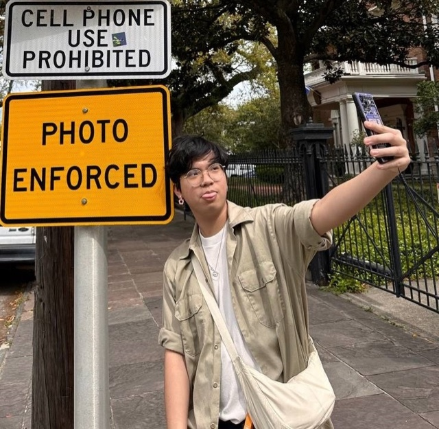
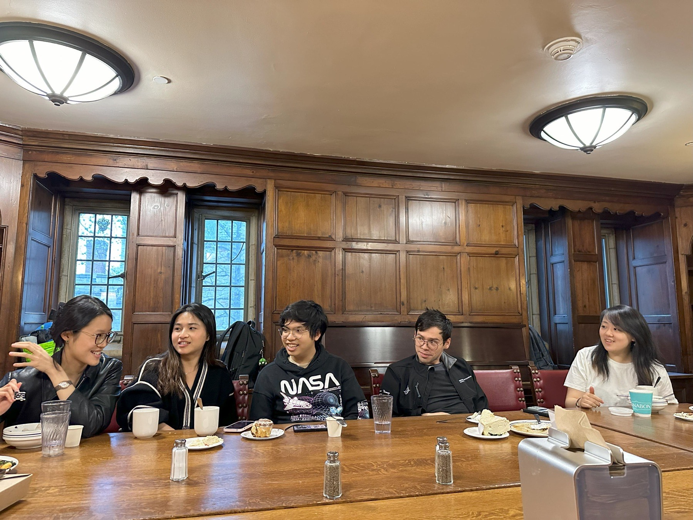
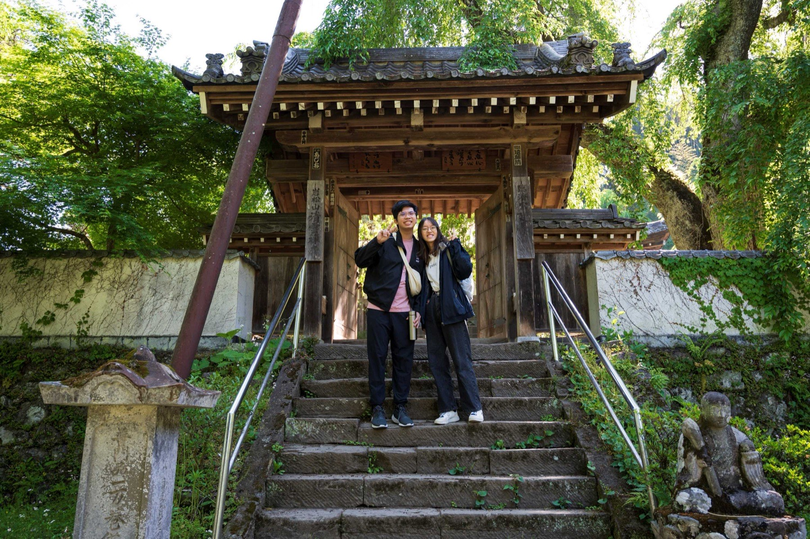
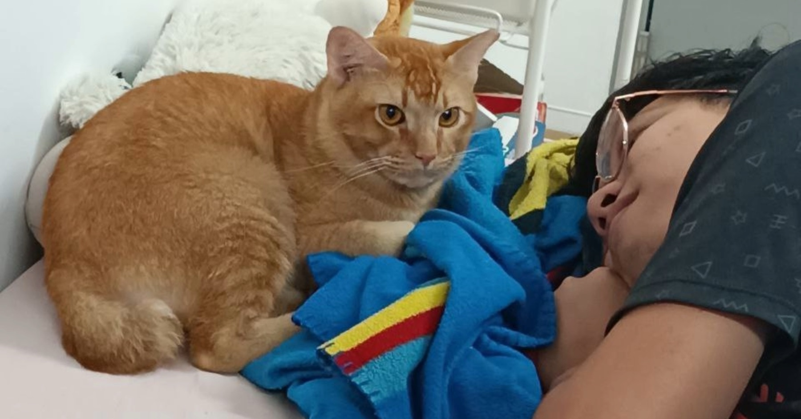
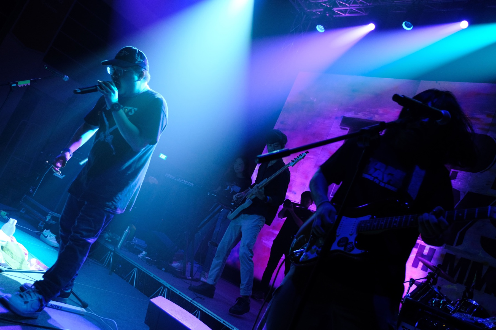

Hello.
my name's Edward, and I'm a
check out my stuff below!
scroll
about me.
Hello! I work in customer success at Riff, helping teams turn their ideas into apps and agents they actually use. I studied Mathematical, Computational, and Statistical Sciences at Yale-NUS College, and I still love all things design related, especially intuitive, human-centric tools.
I've…




projects.
I make functional products which are inspired by my communities and try to make their lives easier, or just a little more fun. Click on any of the projects below to find out more about them!
-
Stu is a Telegram bot designed and implemented by me in Python for Yale-NUS' Student Affairs Office. It's used by students to answer FAQs, make classroom booking requests, and check for upcoming events. Try out using Stu here.
-
This app was built as part of Yale's CPSC419 Full Stack Web Programming module, improving the lackluster Yale Shuttle app to be more user-friendly. I designed the app's database, and implemented the algorithms for route finding and visualisation. You can check out the project repository here.
-
inspired by Christopher Strachey's generator of love letters, and Jean Wang's yalies.bio, this is my love letter to Yale-NUS' closure, and a fun way to remember what made Yale-NUS students so special. You can have fun with it here!
one more run.
Lately I've lost a lot of evenings to Slay the Spire, so here's a tiny deckbuilder of my own: three energy a turn, a handful of cards, and three floors between you and a quiet afternoon.
getting in touch.
you can find me using:
- email.edwardlys@riff.ai
- linkedin.in/edward-liau
- instagram.@edie.wardie
- github.edliau
- telegram.@poyoyobing
hope to see you around :)